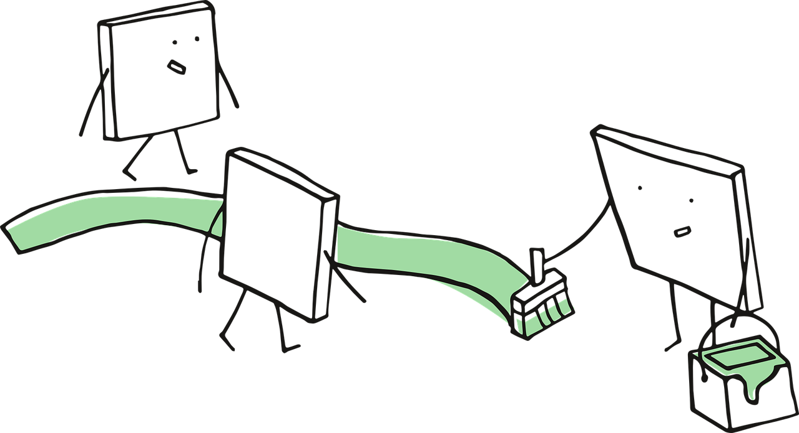

mindmap
root((Frequentist
Hypothesis
Testings
))
Simulation Based<br/>Tests
Classical<br/>Tests
(Chapter 2: <br/>Tests for One<br/>Continuous<br/>Population Mean)
{{Unbounded<br/>Response}}
{{Proportion between<br/>0 and 1<br/>obtained from a <br/>Binary Response}}
(Chapter 3: <br/>Tests for Two<br/>Continuous<br/>Population Means)
Two<br/>Independent<br/>Populations
{{Unbounded<br/>Responses}}
{{Proportions between<br/>0 and 1<br/>obtained from two <br/>Binary Responses}}
Two<br/>Related<br/>Populations or<br/>Measurements
{{Unbounded<br/>Responses}}
(Chapter 4: ANOVA related <br/>Tests for<br/>k Continuous<br/>Population Means)
{{Unbounded<br/>Responses}}
1 Introduction
Learning Objectives
By the end of this chapter, you will be able to:
- Define the two key components to be applied in the execution of hypothesis testing throughout this mini-book: a test workflow and a series of hypothesis testing maps.
- Explain how the test workflow can be applied in hypothesis testing.
- Define key terms such as null hypothesis, alternative hypothesis, observed effect, test statistic, \(p\)-value, and statistical significance in the context of frequentist inference.
- Describe how the initial test mind map acts as the primary chapter structure of this book and as a toolbox.
The most important maxim for data analysis to heed, and one which many statisticians seem to have shunned, is this: “Far better an approximate answer to the right question, which is often vague, than an exact answer to the wrong question, which can always be made precise.”
John W. Tukey (1962, 13)
Data collection worldwide has proven to be a valuable tool for uncovering significant insights across various populations of interest. Whether it involves capturing political preferences in a specific demographic ahead of an upcoming election or assessing the effectiveness of an innovative medical treatment through a randomized clinical trial compared to a standard treatment, data plays a crucial role in enhancing our understanding. At times, this understanding can become quite complex, especially when attempting to untangle the relationships between different variables within a given population or even across two or more populations.

In a vast and diverse field like data science, it is crucial to craft effective and transparent solutions that facilitate proper data analysis. However, conducting a full census to collect data from entire populations can often be impractical due to resource limitations such as budget constraints, workforce shortages, or insufficient technical infrastructure. Despite these challenges, our primary objective remains to gain insights about any population of interest via some class of analysis, even when data availability is limited. In this regard, statistical inference is a powerful tool that allows us to draw insights even with limited data. That said, it is important to emphasize that the process of statistical inference begins with asking the right questions, even before data collection occurs.
In light of this context, we need to establish the appropriate stages of the statistical inference process, along with a useful tool to help select the right hypothesis test based on our specific context, research questions, variable types, and parameters of interest. This is why this mini-book focuses on two key components:
- A test workflow: This workflow will primarily guide us in formulating the right questions about our population(s) of interest, which will involve specific parameters. This process will generally proceed with data collection using a specific sampling method, followed by a thorough analysis that includes exploratory data analysis and the most suitable hypothesis testing based on our primary question(s). We will conclude the process by presenting a compelling storytelling to our stakeholders. Section 1.1 will elaborate further on this workflow.
- A series of test mind maps: Since the test workflow ultimately involves selecting the most suitable hypothesis test, we require a form of guidance to choose these tests according to the inferential question(s) we want to address. Therefore, Section 1.2 will introduce our core test mind map from Figure 1.2, which will direct us to more detailed mind maps each time we introduce a new chapter.
This mini-book on hypothesis testing is intended to serve as a practical manual rather than a traditional statistical textbook. Furthermore, it focuses on providing applied examples in each chapter without any additional exercises for the reader. We aim to explain the necessary mathematical formulas in straightforward language, avoiding formal proofs for these expressions. Additionally, we will establish conventions using admonitions to offer key insights and links to supplementary and more in-depth material.
Heads-up!
A key insight (or insights) related to a specific hypothesis test or a stage in the test workflow. The reader is advised to keep this heads-up in mind throughout the showcase of the corresponding example in any given chapter.
Tip
An idea or ideas that extend beyond the immediate discussion and can offer valuable context and insightful background. Whenever relevant, we will provide references for further reading to deepen understanding and enhance knowledge.
1.1 The Test Workflow
There is a single test workflow for many different flavours!
The statement above summarizes the essence of our testing workflow, which requires a detailed examination in this section. Primarily, it is crucial to understand that mastering all hypothesis tests involves more than just knowing their mathematical formulas or coding functions; it requires a disciplined and structured process. Whether we are evaluating evidence against a null hypothesis—the status quo of our population parameter(s) of interest—or reporting the uncertainty of an estimated effect, the workflow outlined by Figure 1.1 is intended to align your main inferential inquiries with the most suitable test flavour. Regardless of the flavour chosen, this workflow is designed to ensure that our conclusions are not only statistically valid but also based on clear and purposeful reasoning.

The workflow for hypothesis testing consists of eight stages, which will be discussed in detail in the following sections:
- Study design: This initial stage, referred to as the main inferential inquiries, outlines the primary questions we aim to answer through our analysis.
- Data collection and wrangling: The inquiries established in the first stage will guide the design of our data collection, utilizing a specific sampling scheme. Once the data is collected, it must be wrangled and split into two sets: training and test.
- Exploratory data analysis: In this stage, we classify variables to provide preliminary insights using descriptive statistics and visualizations via the training set.
- Testing settings: We must revisit the significance level used in our power analysis (i.e., the procedure used to obtain the minimum sample size \(n\) of data points to be collected). Additionally, we need to list all modelling parameters that will be tested.
- Hypothesis definitions: With the modelling parameters to test, we need to define our hypotheses: the null hypothesis versus the alternative hypothesis. These should be framed in relation to the main inferential inquiries.
- Test flavour and components: At this stage, we choose the most appropriate test flavour and indicate the respective assumptions. Depending on whether the test is classical or simulation-based, we will then identify the necessary components to compute the critical values or \(p\)-values (via the test set) for the next stage.
- Inferential conclusions: The goal of this stage is to determine whether we should reject the null hypothesis based on the critical values or \(p\)-values obtained. This stage also includes running the model diagnostics to check our corresponding assumptions.
- Storytelling: Finally, communicate the findings through a clear and engaging narrative that is accessible to your stakeholders.
1.1.1 Study Design
This is the initial stage of the hypothesis testing workflow, which involves what we refer to as main inferential inquiries. These inquiries are typically posed by stakeholders who wish to conduct a study to better understand a specific population of interest and its associated parameters. In practice, these parameters (such as a population mean or variance) are unknown but considered fixed. This approach, where population parameters are treated as fixed yet unknown, corresponds to the frequentist paradigm.
Heads-up on the frequentist paradigm!
In the frequentist paradigm, statistical inference relies on the concept that probabilities represent long-run relative frequencies of events observed through repeated experimentation or observation. In this approach, we estimate population parameters by examining the distribution of outcomes derived from multiple independent realizations of a random process.

Additionally, this paradigm assumes that the parameters governing a population are fixed but unknown. As a result, all randomness is attributed to the data-generating process, not to the parameters themselves.
It is essential to clearly define the main inferential inquiries based on the following principles:
- We need to consult stakeholders about what the study aims to understand regarding their population of interest before entering the second workflow stage, which involves data collection through sampling.
- The main inferential inquiries should align with the stakeholders’ research questions. These inquiries should be established at the beginning of this workflow stage and must be meaningful and comprehensive enough to guide the entire inferential investigation.
1.1.2 Data Collection and Wrangling
Once the inferential questions are defined, the next step is to collect and prepare the data for analysis. This stage encompasses sampling strategies to ensure the data is representative of the population and data wrangling to clean and structure the dataset appropriately.
Tip on sampling techniques!
It is important to emphasize the need to choose the most suitable sampling technique based on the population’s structure and the research questions guiding our main inferential inquiries. Making the right choice of sampling technique is essential for ensuring that our inferential results are accurate, precise, and generalizable to the population of interest. Here are some fundamental (though not exhaustive) sampling techniques:
- Simple random sampling: Every individual in the population has an equal probability of being sampled. This is the most basic sampling technique and is probabilistically straightforward, but it may be too simplistic for complex populations in practice.
- Systematic sampling: If we have a complete list of individuals in our population, we can sample at regular intervals after selecting a random starting point.
- Stratified sampling: The population is divided into distinct groups called strata. These strata are defined in function of the characteristics of the individuals (e.g., age, income, education, etc.). Data is then sampled proportionally from each stratum or through optimal allocation.
- Cluster sampling: The population is divided into groups known as clusters, such as households or geographic areas. A random sample is then collected from these clusters.
During the stage of data collection and wrangling of our hypothesis testing workflow, it is crucial to dedicate adequate resources to plan and execute data collection using the most suitable sampling technique. Since the scope of this mini-book does not cover sampling in depth, we recommend reviewing the work by Lohr (2021) for more detailed information on various sampling techniques. This resource includes handy practical examples on this vast field.
When it comes to the wrangling aspect of this stage, once we have sampled our data, it is necessary to structure it in a suitable format (e.g., a proper data frame) using our chosen language, such as the R {tidyverse} (Wickham et al. 2019) or Python {pandas} (The Pandas Development Team 2024).
Heads-up on coding tabs!
This mini-book is designed to be “bilingual,” meaning that all hands-on coding can be done in either R or Python. For each specific example presented in any chapter, you will find two tabs: one for R and one for Python. We will first display the input code, followed by the corresponding output.

With this format, you can tailor your coding journey based on your language preferences and interests as you advance through the mini-book.
After we have wrangled our data, we need to split it into two sets:
- Training set. This set is used solely for exploratory data analysis (EDA) and allows us to gain graphical and descriptive insights into how the sample of individuals behaves concerning our main inferential inquiries.
- Test set. This set is reserved for input in our chosen hypothesis testing to be used.
The data splitting is analogous to the standard practice in machine learning to split our data for model training and testing to prevent data leakage in predictive inquiries.

Nevertheless, you might wonder:
Why are we also doing this for an inferential inquiry?
Statistically speaking, the practice of data splitting helps avoid what is known as double dipping. Double dipping occurs when the same data is used both for EDA to generate hypotheses and then again for formal statistical testing. Supported by numerical simulations, it can be demonstrated that double-dipping increases the probability of committing a Type I error, which occurs when we incorrectly reject the null hypothesis \(H_0\) while it is actually true for the population of interest.
For example, consider a one-sample \(t\)-test in a double-dipping context. We might be tempted to formulate our null and alternative hypotheses based on our observed sample mean. For instance, we could state our hypotheses as follows: \(\text{$H_0$: } \mu \geq 10\) (null hypothesis) versus \(\text{$H_1$: } \mu < 10\) (alternative hypothesis), based on a sample mean of \(\bar{x} = 9.5\). If we were to proceed with the statistical test using this same data, we would be falling into the double-dipping trap!
Tip on a further double-dipping resource!
Data splitting is generally not a common practice in statistical inference, despite its frequent use in machine learning. Hence, for more information on double-dipping in statistical inference, Chapter 6 from Reinhart (2015) offers in-depth insights and practical examples.
1.1.3 Exploratory Data Analysis
Once the data is cleaned and structured, it is essential to develop a descriptive understanding of our variables of interest through EDA using the training set. The first step is to classify the variables (e.g., numerical, binary, categorical, ordinal, etc.), which will guide us in selecting the most appropriate descriptive statistics and visualizations to examine the relationships between these variables. For instance, we can explore the distribution of these variables and identify any outliers present in the training set. Note EDA is intended to uncover preliminary trends before conducting formal inferential analysis, and these findings should be communicated to our stakeholders during the final storytelling.

Additionally, the classification of variables during EDA will provide valuable insights for formulating and setting up our hypotheses, while also helping us choose the most suitable test flavour. The insights gained from EDA, along with the identified preliminary trends, will shape our expectations for the entire workflow and facilitate a more nuanced statistical interpretation of the main inferential inquiries. Furthermore, EDA aids in justifying our modelling assumptions later in the process. Finally, we must clarify that any insights gained from EDA cannot be generalized to the entire population; they pertain only to the sampled data within the training set.
1.1.4 Testing Settings
This stage allows us to define all our population parameters based on the main inferential inquiries, along with the standards that will guide us through the subsequent stages of the workflow:
- We need to use the same significance level, denoted as \(\alpha\), that was employed in the power analysis when planning data collection for our sampling technique. The significance level denotes the probability of committing Type I error as in Table 1.1 (i.e., the probability of encountering a false positive).
- Regarding the population parameters of interest, we should begin with a formal statistical definition using Greek letters (for further information, see Appendix A).
| \(H_0\) is true | \(H_0\) is false | |
|---|---|---|
| Reject \(H_0\) | Type I error (False positive) | Correct (True positive) |
| Fail to reject \(H_0\) | Correct (True negative) | Type II error (False negative) |
Heads-up on power analysis!
In hypothesis testing, power analysis is a crucial preliminary step used to determine the minimum sample size \(n\) necessary to detect a signal that allows us to reject the null hypothesis \(H_0\) in favour of the alternative hypothesis \(H_1\). This analysis ensures that our inferential process can effectively distinguish true population effects from random noise. Note that power analysis requires three key components as inputs:
- The significance level \(\alpha\).
- The desired power \(1 - \beta\) (which relates to correctly rejecting \(H_0\) in favour of \(H_1\), resulting in a true positive as in Table 1.1).
- The effect size—a measure of the magnitude of the association (or causation) that the test is designed to detect.
These three components allow power analysis to provide the minimum sample size \(n\) needed to avoid an underpowered study (which occurs when there is a high probability of committing a Type II error as in Table 1.1, denoted as \(\beta\)) or an overly large \(n\) that could waste resources.

To effectively communicate our insights to stakeholders via our final storytelling, it is necessary to translate all modelling parameters and hypotheses into clear, plain language for those who may not have a technical background. We should remember that \(H_0\) must be stated in a way that indicates a status quo in any given parameter(s), meaning there is nothing noteworthy in the context of our inferential study. On the other hand, \(H_1\) must imply a departure from this status quo, indicating that there is indeed something of interest to consider in our inferential analysis.
1.1.5 Hypothesis Definitions
With the settings clarified, the next step is to explicitly define the null and alternative hypotheses. The null hypothesis, \(H_0\), typically asserts that there is no effect or difference—this serves as the default assumption to be tested. As mentioned, \(H_0\) represents the status quo in this context. In contrast, the alternative hypothesis, \(H_1\), indicates the presence of an effect or difference that the data scientist aims to detect. These definitions are derived directly from the main inferential inquiries and insights gained from the EDA using the training set.

It is crucial to emphasize that clarity in hypothesis definitions is vital for selecting the appropriate type of test and accurately interpreting its results. The formulation of \(H_0\) and \(H_1\) establishes the logical framework for the subsequent analysis. For instance, a null hypothesis might state that the mean test scores for two groups are equal, while the alternative hypothesis claims that they differ. These hypotheses must be mutually exclusive to support a valid statistical decision.
1.1.6 Test Flavour and Components
After specifying the hypotheses, the next step is to choose a suitable statistical test and compute its components. The choice of test—referred to here as the flavour—depends on the data structure and the underlying modelling assumptions. We must decide whether to use a classical test, which relies on theoretical distributions (e.g., \(t\)-test, \(z\)-test, chi-squared test, etc.), or a simulation-based method, which employs resampling techniques to empirically estimate the null distribution.
Next, we calculate the observed effect derived from the previously untouched test set. For classical tests, the test statistic (calculated using the observed effect and its measure of uncertainty, the standard error) is compared against a theoretical null distribution (i.e., the distribution under the null hypothesis, \(H_0\)). In the case of simulation-based tests, the observed effect is situated within a null distribution that is generated from repeated permutations or resamplings. This stage provides the statistical framework necessary to evaluate the strength of evidence against the null hypothesis.
1.1.7 Inferential Conclusions
This stage involves converting the test components obtained from the previous stage into numerical outputs that will allow us to draw meaningful conclusions about our main inferential inquiries. Depending on the type of hypothesis testing, we can obtain the following numerical outputs to support these conclusions:
- Critical value: In a classical hypothesis test, the critical value serves as a threshold under the null theoretical distribution and is obtained via our our previously set up significance level \(\alpha\). This value helps determine whether we can reject the null hypothesis \(H_0\) in favour of the alternative hypothesis \(H_1\). We directly compare our observed test statistic against this threshold. If the test statistic exceeds the critical value, we reject \(H_0\) in favour of \(H_1\); if it does not, we fail to reject \(H_0\). This approach emphasizes the magnitude of the observed effect relative to the null distribution.
- \(p\)-value: This approach can be employed in either a classical test or a simulation-based test. In the case of a classical test, the \(p\)-value is derived from the observed test statistic under the theoretical null distribution. Conversely, when using a simulation-based test, the \(p\)-value is associated with the observed effect under the empirical null distribution. Regardless of the type of test used, we compare the \(p\)-value to our predetermined significance level \(\alpha\). If the \(p\)-value is smaller than \(\alpha\), we reject \(H_0\) in favour of \(H_1\); otherwise, we fail to reject \(H_0\). This process provides a probabilistic measure of how surprising the data are under the null distribution (i.e., the status quo).
Heads-up on the practical use of critical and \(p\)-values!
Note that the interpretation of critical and \(p\)-values must go beyond binary decision-making (statistically speaking); it should also involve the direction, magnitude, and practical implications of the estimated effects, especially in applied contexts. Therefore, we must pay attention not only to statistical significance but also to whether the observed differences or associations are substantively significant in an applied context. This refers to practical significance.
Since we are working within a frequentist framework, it is important to remember that critical and \(p\)-values are sensitive to sample sizes. In large samples, very small effects can appear statistically significant, even if they have little practical significance. On the other hand, important effects may be overlooked in studies that lack sufficient statistical power. Understanding these nuances helps us avoid misinterpretation and overgeneralization, especially when communicating results to non-statistical stakeholders. Therefore, careful interpretation is essential to bridge the gap between mathematical output and real-world insights.
The final step in this stage involves model diagnostics. These diagnostics are conducted to verify that the assumptions of data modelling are met (such as normality, independence, homoscedasticity, etc.). If these assumptions are violated, we must reconsider the validity of our inferential conclusions. This process helps prevent drawing incorrect conclusions due to mis-specified models or flawed data structures. If any assumptions are not satisfied, we should return to the previous stage, select a different type of test, and proceed accordingly.
1.1.8 Storytelling
This final stage involves translating our statistical results into language and formats that are accessible primarily to our stakeholders who posed the main inferential questions. The statistical literacy of these stakeholders can vary; they may include research fellows, corporate leadership, policymakers, or even the general public. The ultimate goal of this stage is to craft a data story that either supports or questions a hypothesis based on our study findings. Clear communication should incorporate key EDA and inferential results.
Effective storytelling must begin with a succinct statement that encompasses the main inferential inquiries, outlines our null and alternative hypotheses in plain language, specifies the chosen significance level (with a tailored explanation for our specific stakeholders), explains why we selected our particular test flavour (i.e., the rationale behind our data modelling assumptions), and reports uncertainty quantification. This transparent listing of all our inferential elements allows stakeholders to assess the reliability of our analysis while gaining a fair understanding of any study limitations.

It is important to clarify the difference between statistical significance and practical significance in our storytelling when presenting significant results. Conversely, when discussing non-significant results, we should frame them in a way that indicates the sampled data and study design did not provide enough evidence against the status quo represented by the null hypothesis. This lack of evidence, in light of a non-significant result, is an excellent opportunity to discuss potential issues such as an underpowered study, limitations in sample size, or bias in data collection.
Heads-up on uncertainty quantification!
When presenting our findings to stakeholders, it is essential to include uncertainty quantification as a key component of our storytelling. This process incorporates the uncertainty associated with our point estimates of observed effects, as these estimates are derived from random sampling of our population of interest. We express this uncertainty through confidence intervals, which show a range of plausible values where our model parameters may lie (or may not!). The information conveyed by these intervals includes:
- A narrow confidence interval around a parameter estimate indicates larger precision in the estimation. For stakeholders, this signifies a more reliable estimate, likely resulting from a sufficiently large sample size, low variability in the sample data or well-specified data modelling.
- A wide confidence interval around a parameter estimate indicates lower precision in the estimation. For stakeholders, this represents a less reliable estimate, which may stem from a small sample size, high variability in the sampled data or mis-specification of the data modelling.
1.2 The Test Mind Map

Figure 1.2 outlines the conceptual and organizational structure of this mini-book through its corresponding chapters. This mind map for frequentist hypothesis testings is divided into two main branches: classical and simulation-based tests. The classical tests are further categorized based on the number of groups being compared (one, two, or \(k\) groups), the nature of the variable of interest (unbounded continuous data or proportions derived from binary outcomes), and whether the measurements are independent or related:
- Chapter 2 focuses on hypothesis tests applied to a single population mean across two different types of responses. For unbounded responses, traditional tests such as the one-sample \(t\)-test are introduced. For binary responses transformed into proportions (e.g., the fraction of success in a Bernoulli trial), the chapter covers tests for one population proportion, including the \(z\)-test for proportions.
- Chapter 3 extends the single-group approach to comparisons between two groups, concentrating on both independent and related populations. For two independent populations with unbounded responses, it discusses the two-sample \(t\)-test. For binary outcomes between two groups, the chapter explains inference on two proportions using methods like the \(z\)-test for two proportions. It also addresses related populations (e.g., pre/post measurements or matched pairs) by introducing the paired-sample \(t\)-test, highlighting how dependency affects the testing framework.
- Chapter 4 generalizes the two-group comparison to \(k\) groups using analysis of variance (ANOVA) techniques. This chapter focuses on continuous, unbounded response variables and explains how ANOVA partitions total variation to detect mean differences across groups.
1.3 Chapter Summary
This opening chapter of the mini-book on hypothesis testing introduces the foundational motivations, principles, and practical frameworks that underlie the frequentist approach to statistical inference. We begin by emphasizing hypothesis testing as a central inferential tool in data science and research, which enables practitioners to draw population-level conclusions based on finite sample evidence. Additionally, we revisit the frequentist paradigm, which highlights the logic of repeated sampling and the fixed nature of population parameters.
We also outline the practical components that structure formal hypothesis testing through a comprehensive workflow. This eight-stage framework encompasses everything from study design and data collection to communicating inferential conclusions. Each stage is briefly introduced as a foundation for the upcoming chapters, illustrating how test results are closely linked to modelling assumptions, data preparation strategies, and communication objectives.